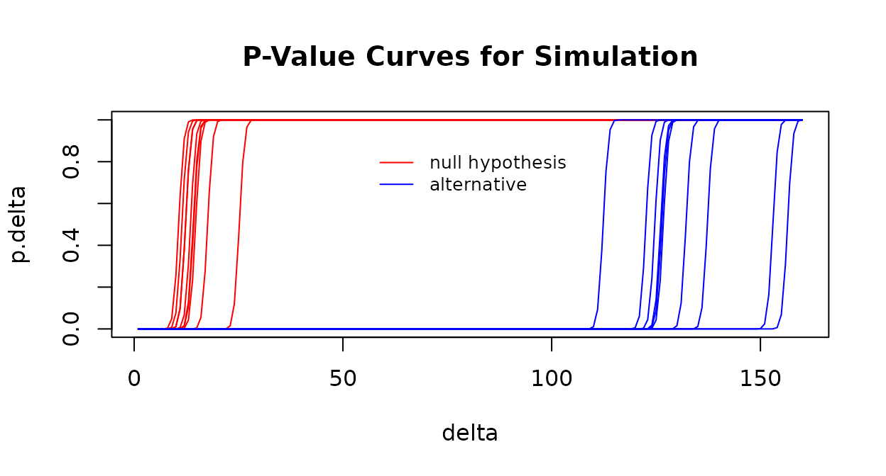

Multinomial Neighborhood Test
2023-03-15
multinomial-neighborhood-test-vignette.RmdWe’ll look at the twoNewsGroups dataset included in the hddtest
package. It contains document term frequency matrices for two of the 20
newgroups (sci.med and rec.sport.baseball). See
?twoNewsGroups for more information.
Start by sampling two sets of 200 documents from the sci.med newsgroup. We’ll use this to simulate the null hypothesis being TRUE, that is the two groups come from the same distribution.
library(hddtest)
data(twoNewsGroups)
num_docs <- 200
vecs2Test <- list(NA,2)
row_ids <- 1:nrow(twoNewsGroups$sci.med)
group_1 <- sample(row_ids, num_docs)
group_2 <- sample(row_ids[-group_1], num_docs)Next for each of the two groups, sum the 200 term frequency vectors together. They will be the two multinomial vectors that we test.
vecs2Test[[1]] <- twoNewsGroups$sci.med[group_1, ] |>
colSums() |>
matrix(nrow = 1)
vecs2Test[[2]] <- twoNewsGroups$sci.med[group_2, ] |>
colSums() |>
matrix(nrow = 1)Now test the null hypothesis that the associated multinomial probability vectors are within some neighborhood, delta, of each other (against the alternative that they are not). We can then use this result to infer whether the sets of documents are likely from the same newsgroup.
vecs2Test |> multinom.neighborhood.test(delta = 60)
#> $statistic
#> [1] 19.67638
#>
#> $pvalue_delta
#> [,1]
#> [1,] 1Here we fail to reject the null hypothesis using a delta of 60. How to choose the appropriate delta? The answer may come from subject matter expertise about the problem domain. Or you can run a simulation to gain insight. Below we define a simulation function.
simulation <- function(data, null_hyp, delta, reps = 10, num_docs = c(200, 200)){
vecs2Test <- list( matrix(NA, reps, ncol(data[[1]])), matrix(NA, reps, ncol(data[[1]])) )
for(i in 1:reps){
if(null_hyp){
row_ids <- 1:nrow(data[[2]])
group_1 <- sample(row_ids, num_docs[2])
group_2 <- sample(row_ids[-group_1], num_docs[2])
vecs2Test[[1]][i, ] <- data[[2]][group_1, ] |> colSums()
vecs2Test[[2]][i, ] <- data[[2]][group_2, ] |> colSums()
}else{
vecs2Test[[1]][i, ] <- data[[1]][sample(1:nrow(data[[1]]), num_docs[1]), ] |>
colSums()
vecs2Test[[2]][i,] <- data[[2]][sample(1:nrow(data[[2]]), num_docs[2]), ] |>
colSums()
}
}
result <- vecs2Test |> multinom.neighborhood.test(delta = delta)
} #end simulation functionNow run the simulation for varying values of delta (in the range 1 to 160) testing both the null and alternative hypotheses for 30 replications each. For the null hypothesis simulation, we sample documents from the same newsgroup. For the simulation of the alternative hypotheis, we sample documents from the two different newsgroups. The resulting plot shows one curve for each the 60 simulations (which compute the p-value at each value of delta.)
delta <- 1:160
p.delta.null <- simulation(data = twoNewsGroups, null_hyp = TRUE, delta = delta)$pvalue_delta
p.delta.alt <- simulation(data = twoNewsGroups, null_hyp = FALSE, delta = delta)$pvalue_delta
#Plot:
par(xpd = TRUE)
matplot(delta, cbind(t(p.delta.null), t(p.delta.alt)),
type = "l", lty = 1, ylab = "p.delta", main = "P-Value Curves for Simulation",
col = c(rep("red", nrow(p.delta.null)), rep("blue", nrow(p.delta.alt))))
legend(55, .9, legend = c("null hypothesis", "alternative"),
col = c("red", "blue"), lty = 1, cex = 0.8, box.lty = 0)
Notice in the plot above that for delta in the range of 50 to 100, the p-value (p.delta) is large when the null hypothesis is true (red curves) and small when the null hypothesis is false (blue curves). So, our previous choice of delta=60 seems reasonable.